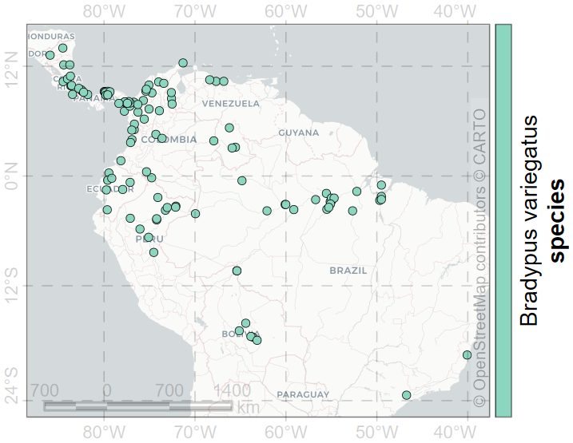

Подготовка
Некоторые определения
AUC -
Требуемые пакеты
Основной dismo. Он подгружает sp для работы с векторными пространственными данными и raster для работы с растровыми пространственными данными.
Данные из пакета maptools используются для картоосновы.
Пакет MuMIn - для определения оптимального числа независимых переменных
Пакет kernlab - для моделирования методом опорных векторов (SVM)
invisible(lapply(c("dismo","maptools","MuMIn","kernlab")
,function(pkg)
if (!requireNamespace(pkg)) install.packages(pkg) else 0L
))Loading required namespace: dismoLoading required namespace: maptoolsLoading required namespace: MuMInLoading required namespace: kernlabLoading required package: dismoLoading required package: rasterLoading required package: spНаходки
bradypus <- read.table(file.path(system.file(package="dismo"),"ex/bradypus.csv")
,header=TRUE,sep=',')
str(bradypus)'data.frame': 116 obs. of 3 variables:
$ species: chr "Bradypus variegatus" "Bradypus variegatus" "Bradypus variegatus" "Bradypus variegatus" ...
$ lon : num -65.4 -65.4 -65.1 -63.7 -63.9 ...
$ lat : num -10.4 -10.4 -16.8 -17.4 -17.4 ... species lon lat
1 Bradypus variegatus -65.4000 -10.3833
2 Bradypus variegatus -65.3833 -10.3833
3 Bradypus variegatus -65.1333 -16.8000
4 Bradypus variegatus -63.6667 -17.4500
5 Bradypus variegatus -63.8500 -17.4000
6 Bradypus variegatus -64.4167 -16.0000
Картооснова
Использование векторной карты границ государств в качестве картографической основы

Среда обитания
[1] "C:/Software/Rlibs/dismo/ex/bio1.grd"
[2] "C:/Software/Rlibs/dismo/ex/bio12.grd"
[3] "C:/Software/Rlibs/dismo/ex/bio16.grd"
[4] "C:/Software/Rlibs/dismo/ex/bio17.grd"
[5] "C:/Software/Rlibs/dismo/ex/bio5.grd"
[6] "C:/Software/Rlibs/dismo/ex/bio6.grd"
[7] "C:/Software/Rlibs/dismo/ex/bio7.grd"
[8] "C:/Software/Rlibs/dismo/ex/bio8.grd"
[9] "C:/Software/Rlibs/dismo/ex/biome.grd"class : RasterBrick
dimensions : 192, 186, 35712, 9 (nrow, ncol, ncell, nlayers)
resolution : 0.5, 0.5 (x, y)
extent : -125, -32, -56, 40 (xmin, xmax, ymin, ymax)
crs : +proj=longlat +datum=WGS84 +no_defs
source : memory
names : bio1, bio12, bio16, bio17, bio5, bio6, bio7, bio8, biome
min values : -23, 0, 0, 0, 61, -212, 60, -66, 1
max values : 289, 7682, 2458, 1496, 422, 242, 461, 323, 14 [1] 1 2 3 4 5 7 8 9 10 11 12 13 14
Биоклиматические переменные WorldClim (полный список)
| BIO1 | Annual Mean Temperature |
| BIO5 | Max Temperature of Warmest Month |
| BIO6 | Min Temperature of Coldest Month |
| BIO7 | Temperature Annual Range (BIO5-BIO6) |
| BIO8 | Mean Temperature of Wettest Quarter |
| BIO12 | Annual Precipitation |
| BIO16 | Precipitation of Wettest Quarter |
| BIO17 | Precipitation of Driest Quarter |
Данные можно получить с помощью функции getData() из пакета raster, например:
Наземные биомы (данные)
| BIOME | Terrestrial biome |
В растре biome записаны номинальные характеристики:
| 1 | Tropical & Subtropical Moist Broadleaf Forests |
| 2 | Tropical & Subtropical Dry Broadleaf Forests |
| 3 | Tropical & Subtropical Coniferous Forests |
| 4 | Temperate Broadleaf & Mixed Forests |
| 5 | Temperate Conifer Forests |
| 6 | Boreal Forests/Taiga |
| 7 | Tropical & Subtropical Grasslands, Savannas & Shrublands |
| 8 | Temperate Grasslands, Savannas & Shrublands |
| 9 | Flooded Grasslands & Savannas |
| 10 | Montane Grasslands & Shrublands |
| 11 | Tundra |
| 12 | Mediterranean Forests, Woodlands & Scrub |
| 13 | Deserts & Xeric Shrublands |
| 14 | Mangroves |
Подвыборки
Используемый параметр для генератора псевдослучайных чисел. Зафиксированное значение обеспечивает воспроизводимость вычислений.
[1] 471Число 1/k характеризует долю тестовых данных. Разбиваем данные на k групп, одна из которых будет тестовая.
Выбор номера тестовой группы:
[1] 3Присутствие
group <- dismo::kfold(bradypus,k) ## group <- sample(seq(k),nrow(pres),replace=TRUE) ## альтернативное группирование
str(group) int [1:116] 4 5 4 2 5 5 2 4 2 1 ...group
1 2 3 4 5
23 23 24 23 23 Формирование точек присутствия и разбиение их на группы для обучения и тестирования
pres <- bradypus[,-1] ## presence
pres_train <- pres[group!=g,]
pres_test <- pres[group==g,]
nrow(pres_train)[1] 92[1] 24Псевдоотсутствие
Используемый пространственный охват

Формирование набора точек псевдоотсутствия
backg <- randomPoints(predictors, n=1000, ext=ext, extf = 1.25)
colnames(backg) = c('lon', 'lat')
head(backg) lon lat
[1,] -80.75 25.25
[2,] -55.75 -17.75
[3,] -39.25 -11.75
[4,] -49.25 -22.75
[5,] -59.75 5.25
[6,] -60.75 -21.25Присвоения номеров групп для отбора в тестовую группу
group
1 2 3 4 5
200 200 200 200 200 Обучение и тестирование
Формирование группы для обучения и группы для тестирования для точек псевдоотсутствия
Формирование группы для обучения из точек присутствия и точек псевдоотсутствия
Формирование группы для тестирования из точек присутствия и точек псевдоотсутствия
Вектор присутствия (значение 1) и отсутствия (значения 0) для обучающей выборки
Вектор присутствия (значение 1) и отсутствия (значения 0) для тестовой выборки
Получение характеристик из растров для точек обучающей выборки
Новый столбец присутствия/отсутствия
Зададим биом категорией (фактором)
'data.frame': 892 obs. of 10 variables:
$ pa : int 1 1 1 1 1 1 1 1 1 1 ...
$ bio1 : int 263 263 253 243 243 252 240 275 271 274 ...
$ bio12: int 1639 1639 3624 1693 1693 2501 1214 2259 2212 2233 ...
$ bio16: int 724 724 1547 775 775 1081 516 956 807 877 ...
$ bio17: int 62 62 373 186 186 280 146 208 281 230 ...
$ bio5 : int 338 338 329 318 318 326 317 335 327 329 ...
$ bio6 : int 191 191 150 150 150 154 150 231 220 227 ...
$ bio7 : int 147 147 179 168 168 172 168 104 107 102 ...
$ bio8 : int 261 261 271 264 264 270 261 270 266 269 ...
$ biome: Factor w/ 13 levels "1","2","3","4",..: 1 1 1 1 1 1 2 1 1 1 ... pa bio1 bio12 bio16 bio17 bio5 bio6 bio7 bio8 biome
1 1 263 1639 724 62 338 191 147 261 1
2 1 263 1639 724 62 338 191 147 261 1
3 1 253 3624 1547 373 329 150 179 271 1
4 1 243 1693 775 186 318 150 168 264 1
5 1 243 1693 775 186 318 150 168 264 1
6 1 252 2501 1081 280 326 154 172 270 1
7 1 240 1214 516 146 317 150 168 261 2
8 1 275 2259 956 208 335 231 104 270 1
9 1 271 2212 807 281 327 220 107 266 1
10 1 274 2233 877 230 329 227 102 269 1
11 1 266 2592 872 498 320 214 105 262 1
12 1 274 2233 877 230 329 227 102 269 1
13 1 266 2608 957 306 322 219 103 262 1
14 1 239 1194 540 130 313 165 148 252 1
15 1 251 1617 808 97 312 194 118 246 1
16 1 271 2599 1250 136 325 224 101 267 1
17 1 269 2211 981 196 333 219 114 263 1
18 1 270 2274 1008 191 331 221 110 266 1
19 1 254 2084 1011 137 317 197 119 251 1
20 1 263 1842 818 176 326 204 121 257 1
21 1 263 1878 893 122 324 212 112 259 1
22 1 260 1882 845 170 324 203 121 255 1
23 1 260 1882 845 170 324 203 121 255 1
24 1 270 2479 1277 154 331 214 117 267 1Получение характеристик из растров для точек тестовой выборки
envtest <- extract(predictors, test) |> data.frame()
envtest <- cbind(pa=pb_test,envtest)
envtest$biome = factor(envtest$biome, levels=levels)
str(envtest)'data.frame': 224 obs. of 10 variables:
$ pa : int 1 1 1 1 1 1 1 1 1 1 ...
$ bio1 : int 260 263 263 264 250 256 261 257 272 257 ...
$ bio12: int 1945 1878 7091 7682 2651 4820 2945 2780 1227 3575 ...
$ bio16: int 880 893 2065 2426 926 1663 1040 945 503 1295 ...
$ bio17: int 143 122 1372 1496 213 957 405 398 64 359 ...
$ bio5 : int 324 324 316 312 308 299 319 315 340 316 ...
$ bio6 : int 204 212 213 218 197 217 205 204 207 202 ...
$ bio7 : int 120 112 104 94 110 81 114 111 133 114 ...
$ bio8 : int 256 259 262 263 247 258 255 250 268 258 ...
$ biome: Factor w/ 13 levels "1","2","3","4",..: 1 1 1 1 1 1 1 1 1 1 ...Отдельно пригодятся точки присутствия и псевдоотсутствия тестовой выборки
В итоге
Обзор размеров выборок
data.frame(pres_train=nrow(pres_train),pres_test=nrow(pres_test),pres=nrow(pres)
,backg_train=nrow(backg_train),backg_test=nrow(backg_test)
,train=nrow(train),envtrain=nrow(envtrain)
,test=nrow(test),envtest=nrow(envtest)
,row.names="size") |> t() |> knitr::kable()| size | |
|---|---|
| pres_train | 92 |
| pres_test | 24 |
| pres | 116 |
| backg_train | 800 |
| backg_test | 200 |
| train | 892 |
| envtrain | 892 |
| test | 224 |
| envtest | 224 |
opP <- par(mar=c(2.5,2.5,1,1))
plot(!is.na(predictors[[1]]), col=c('white', 'light grey'), legend=FALSE)
plot(ext, add=TRUE, col='red', lwd=2)
points(backg_train, pch='b', cex=0.5, col='yellow')
points(backg_test, pch='b', cex=0.5, col='black')
points(pres_train, pch= 'p', col='forestgreen')
points(pres_test, pch='p', col='blue')